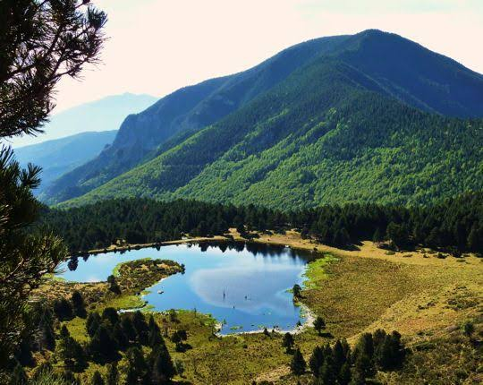

Cirque de
Nohèdes
Massif du Madres


⟹ Réserve Naturelle Nationale ⟸
Nichée dans le massif du Madres-Coronat, la vallée de Nohèdes forme un long rectangle d'une dizaine de kilomètres, où l'altitude varie de 760 à 2 459 mètres. Depuis près de quatre mille cinq cents ans, les hommes y ont façonné le paysage, la forêt reculant peu à peu au profit du pâturage.

C'est cette empreinte ancienne, associée à la richesse exceptionnelle de sa biodiversité, qui a justifié la création de la réserve naturelle de Nohèdes par décret ministériel du 23 octobre 1986. L'année suivante, une association gestionnaire est constituée pour assurer la conservation durable de ce patrimoine sur ses 2 137 hectares.
Le site est parfois surnommé la vallée de l'arche perdue, tant sa position au carrefour des influences méditerranéennes, océaniques et montagnardes en fait un concentré de milieux naturels rarement réuni sur un territoire aussi restreint.
Depuis sa création, la réserve s'est imposée comme un lieu de référence pour le suivi scientifique de plusieurs espèces patrimoniales, en particulier le gypaète barbu, dont la présence en tant que nicheur a été confirmée en 2014.
La richesse naturelle de Nohèdes tient d'abord à sa position, au carrefour de plusieurs influences climatiques. À basse altitude, sur les versants sud et est, règne un climat méditerranéen ; en hauteur, au nord et à l'ouest, dominent des influences plus océaniques, voire quasi arctiques sur les sommets.
Cette diversité de conditions, associée à l'amplitude altitudinale du site, explique la présence de 117 espèces d'oiseaux, dont dix présentent un intérêt patrimonial majeur, ainsi que d'une flore parmi les plus riches des Pyrénées-Orientales.
Isards et marmottes occupent les crêtes, tandis que chat forestier et genette se font plus discrets en forêt. Quatorze espèces de chauves-souris trouvent également refuge dans les cavités et les vieux boisements de la réserve.
Fragilité des espèces patrimoniales : l'alysson des Pyrénées et le gypaète barbu figurent parmi les espèces menacées dont le suivi reste une priorité pour les gestionnaires de la réserve.
Réglementation stricte : circulation motorisée, feux, prélèvements de végétaux, animaux, roches ou fossiles sont interdits afin de préserver l'intégrité du site.
Changement climatique : la remontée en altitude de certaines espèces menace l'équilibre des milieux les plus froids, en particulier les tourbières d'altitude.
Retour discret des grands prédateurs : la présence du loup, quasi permanente entre 1996 et 2000, n'a livré depuis que de rares indices, illustrant la difficulté du suivi de ces espèces sur un territoire aussi vaste.
La réserve de Nohèdes se visite toute l'année, avec une préférence pour le printemps et l'été pour l'observation de la faune et de la flore.
Depuis le village de Nohèdes la Maison de la réserve constitue le point de départ naturel des neuf sentiers de découverte balisés.
À pied plusieurs itinéraires mènent aux étangs de Nohèdes, avec des dénivelés soutenus qui demandent une bonne condition physique et un départ matinal en été.
Pour l'observation des rapaces les crêtes et les zones dégagées en fin de matinée, lorsque les courants thermiques se forment, offrent les meilleures chances d'apercevoir gypaètes et aigles royaux.